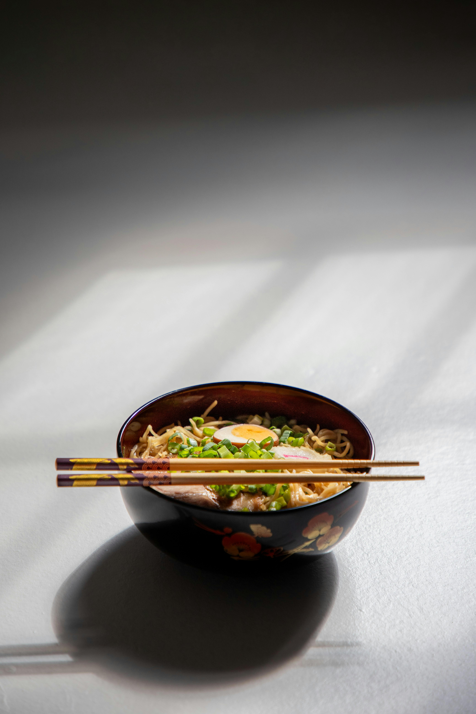
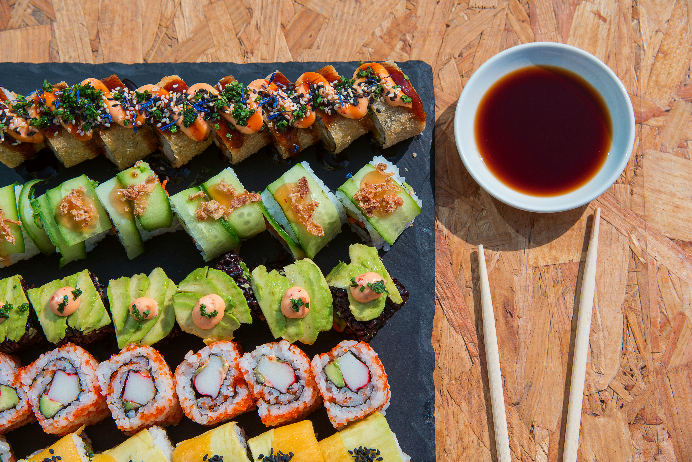
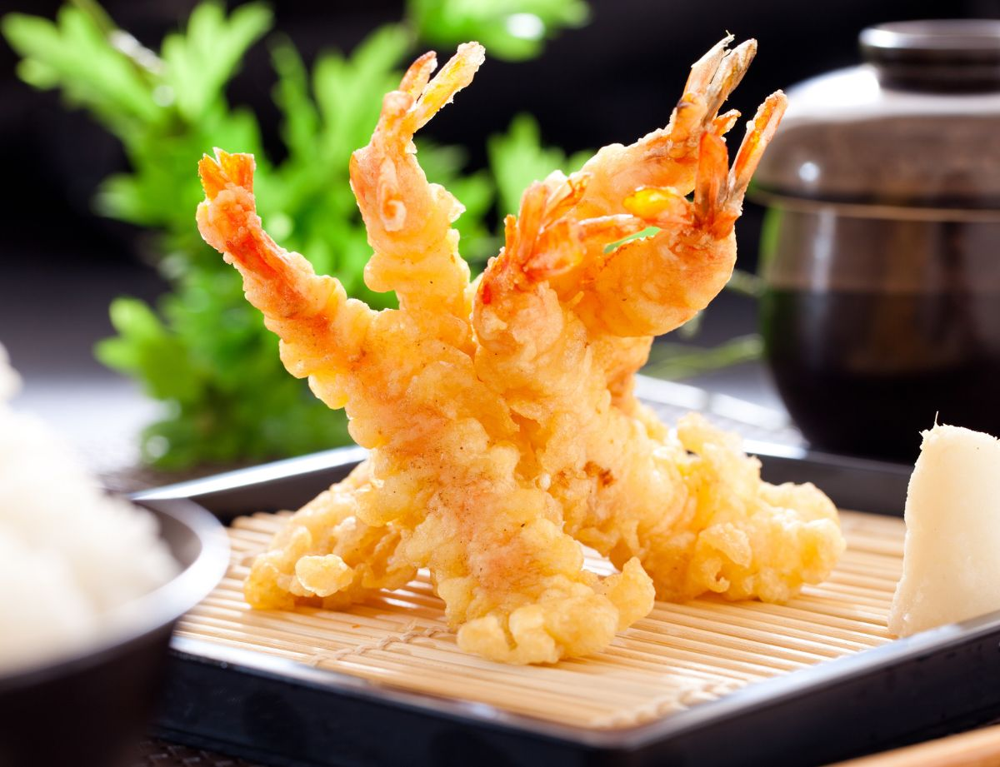
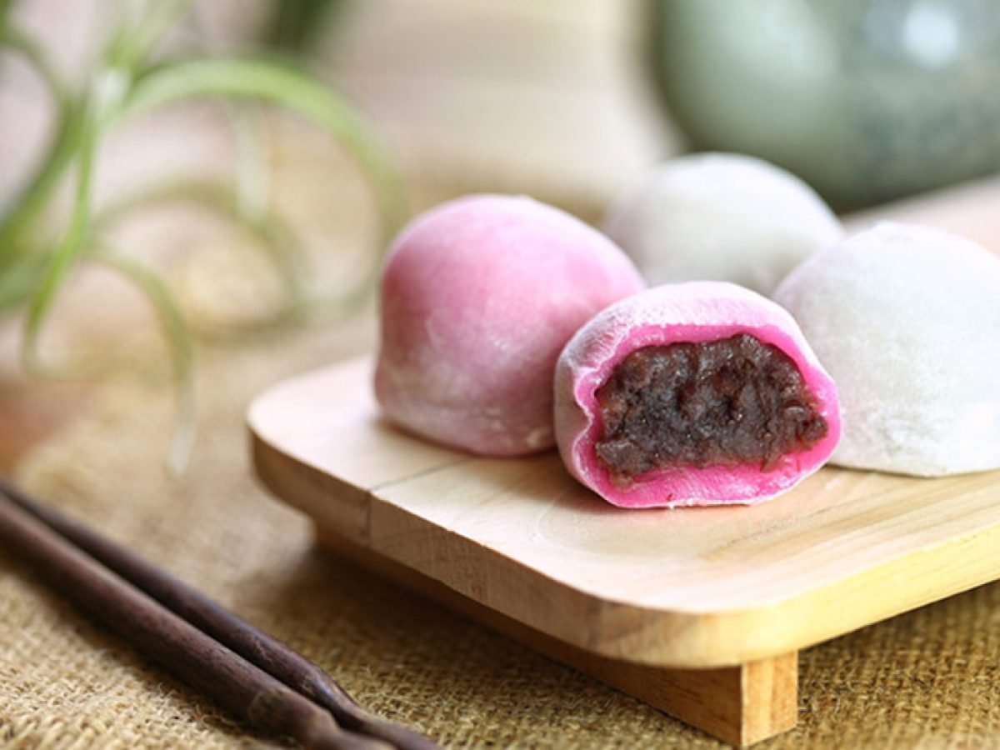
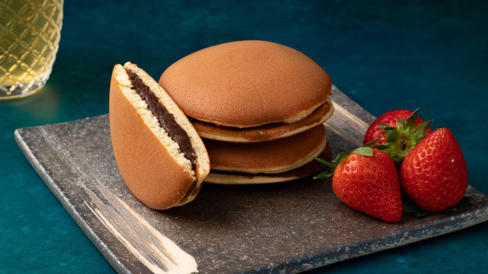
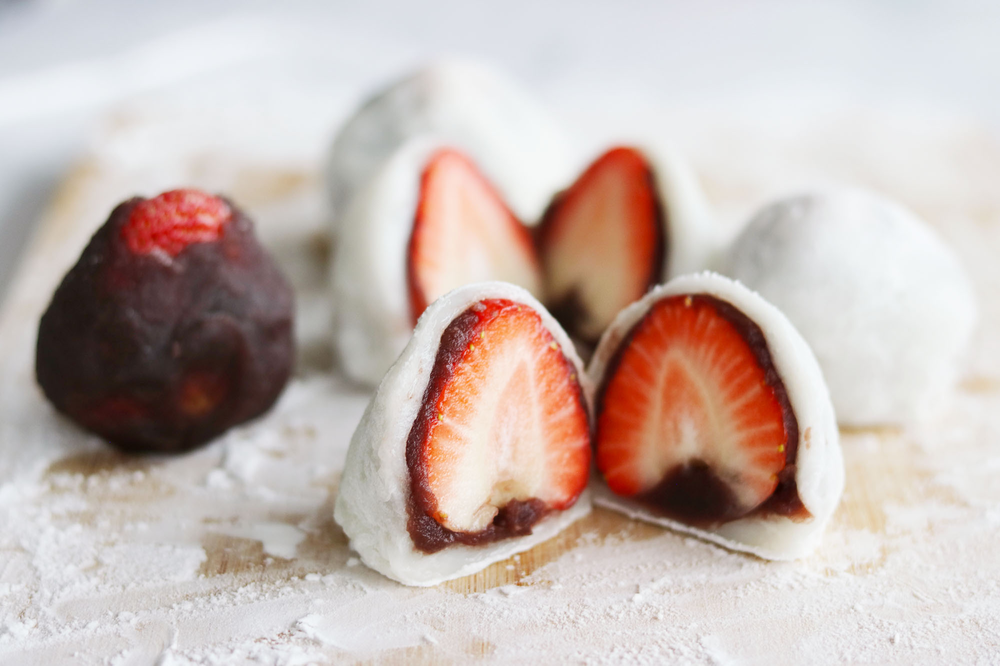
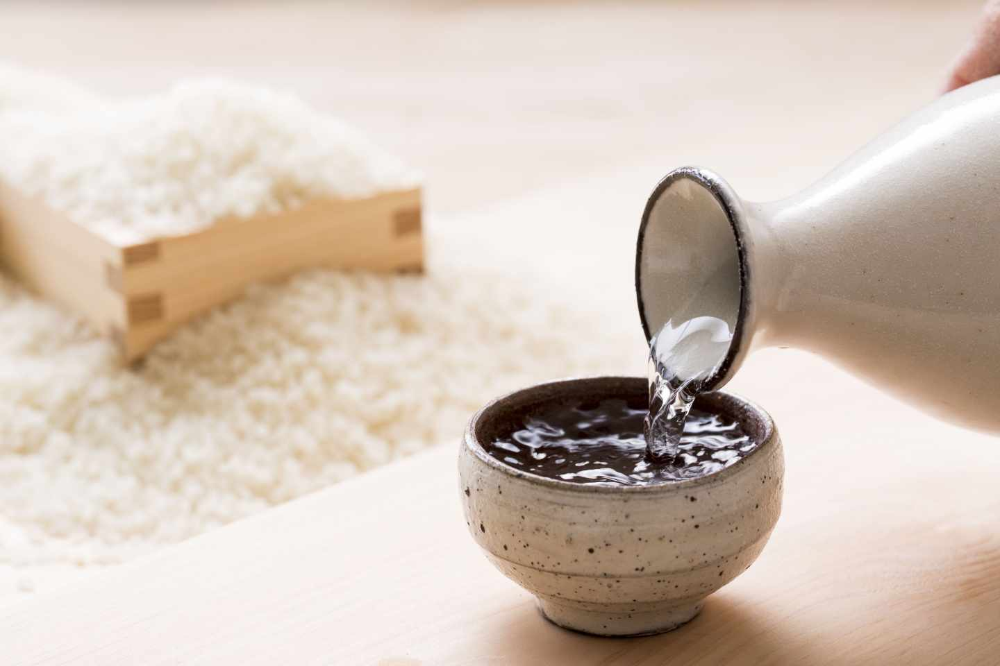
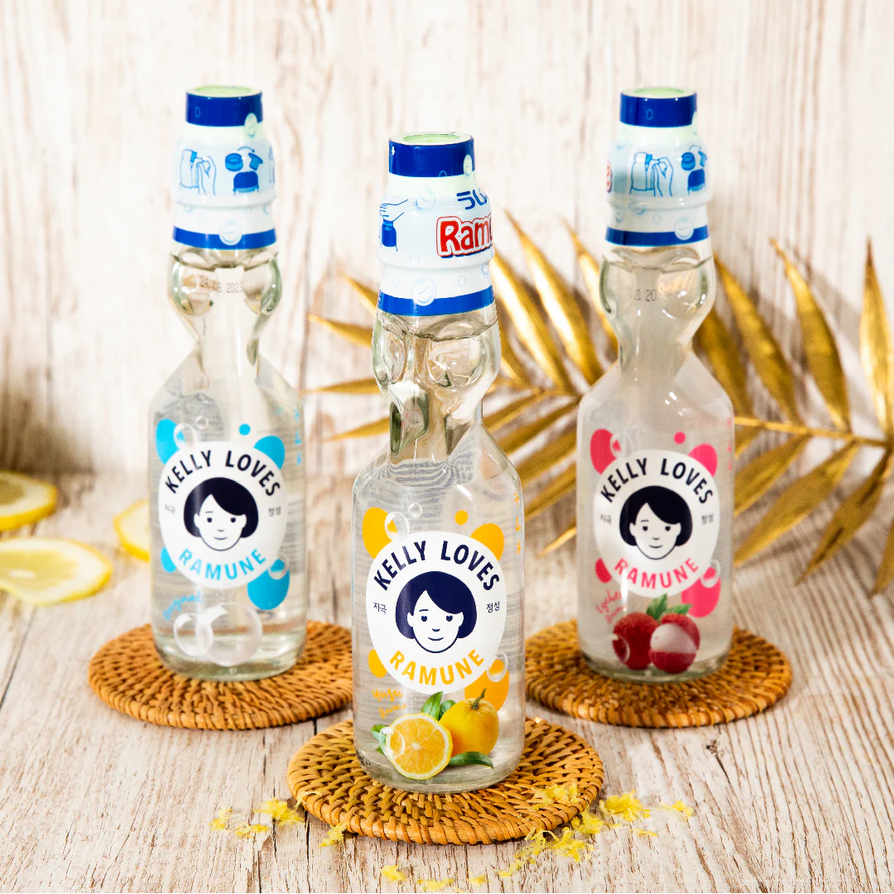

Ramen

Ramen es uno de los platos más populares de la cocina japonesa.
Fideos servidos en caldo, acompañados por ingredientes como carne, huevo, algas o vegetales.
Es uno de los platos más populares su variedad y estilos.

Su gastronomía refleja una combinación de tradición, equilibrio y cuidado por los ingredientes.
Se distingue por preparaciones simples, sabores naturales y una presentación que forma parte de la experiencia cultural.

Ramen es uno de los platos más populares de la cocina japonesa.
Fideos servidos en caldo, acompañados por ingredientes como carne, huevo, algas o vegetales.
Es uno de los platos más populares su variedad y estilos.

Base de arroz con pescado o marisco crudo o semi-cocinado y otros ingredientes tales como verduras y huevo. Se acompaña de salsa de soja, wasabi y gengibre marinado.

Tempura es un plato tradicional que consiste en mariscos o vegetales rebozados y fritos en una masa ligera, logrando una textura crujiente y delicada. Se caracteriza por resaltar el sabor natural de los ingredientes y por su preparación simple.

El Mochi es un dulce tradicional elaborado con arroz glutinoso, de textura suave y elástica, muchas veces relleno con pasta dulce.

El Dorayaki consiste en dos capas de bizcocho esponjoso rellenas con pasta de porotos rojos, muy popular como merienda.

El Daifuku es una variante del mochi rellena, generalmente con anko (pasta dulce) o frutas, destacándose por su sabor delicado y su presentación simple.

El Sake es una bebida fermentada a base de arroz, presente en celebraciones y comidas típicas.

El Matcha es un té verde en polvo muy ligado a la tradición, utilizado en ceremonias y valorado por su sabor intenso.

El Ramune es una gaseosa popular, conocida por su botella característica y su consumo en festivales.
Se dice antes de comer y significa “recibo humildemente”, como forma de agradecimiento por los alimentos.